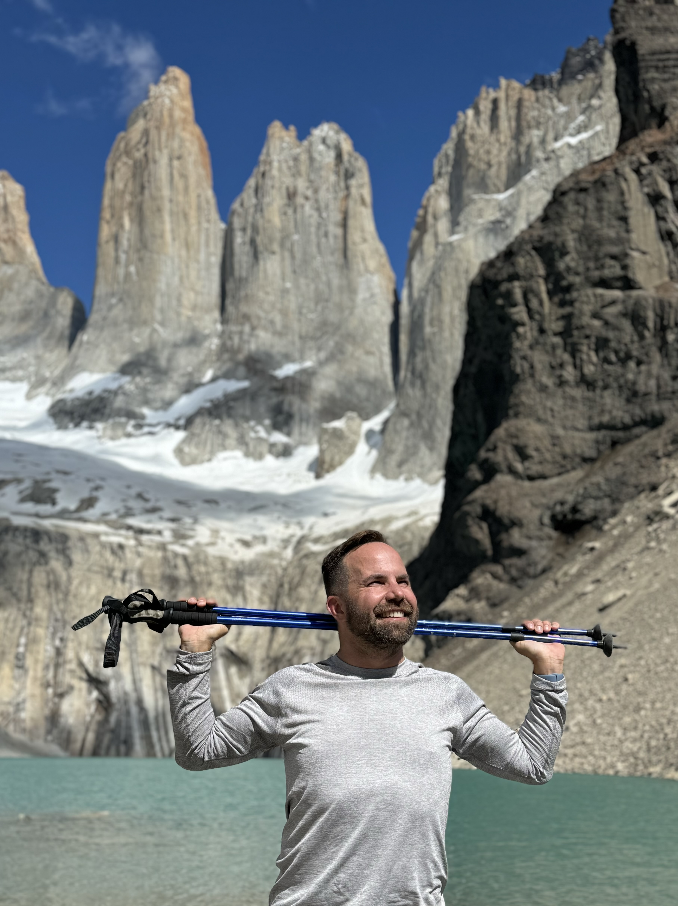

Patagonia
Glaciers, mountain light, windswept trails, and the vast southern edge of the world.

Patagonia felt like a place built out of extremes: sharp peaks, huge skies, impossible blues, and wind that seemed to have its own personality.
After the surreal stillness of the Atacama Desert, the south felt wilder and more kinetic — all movement, weather, water, and stone. The landscape had a way of making everything else feel small in the best possible sense.
This page is a placeholder for a fuller reflection on the trip: the trails, the views, the photos, the cold air, and the strange joy of standing somewhere that feels both remote and unforgettable.